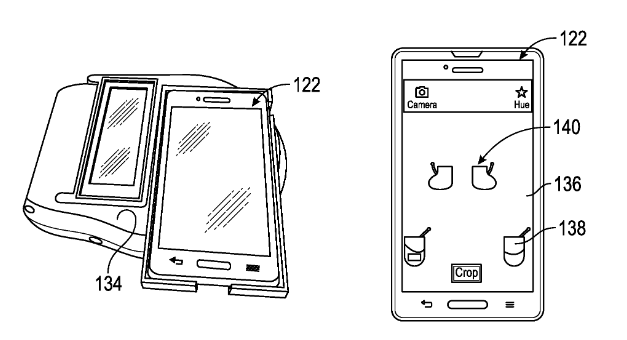

I am Sr. Director of AI at
QA Wolf.
Before that, I was VP Engineering at
Duffl,
Wellth and
dm.ai.
I received my PhD in Computer Science from UCLA under Professor
Song-Chun Zhu. During that time, I published a textbook titled
Machine Learning with TensorFlow. Previously, at the University of Virginia, I graduated with a
B.S. in Computer Science, and a B.A. in Mathematics. There, I
was a founding member of
HackUVA
(now HooHacks), our University's first hackathon.
Learning human utility from video demonstrations
for deductive planning in robotics.
Shukla, N., He, Y., Chen, F., & Zhu, S. C. (2017, October). In
Conference on Robot Learning (CoRL) (pp. 448-457).
download PDF
A unified framework for
human-robot knowledge transfer.
Shukla, N., Xiong, C., & Zhu, S. C. (2015, September). In
2015 AAAI Fall Symposium Series.
download PDF
Robot learning with a spatial, temporal, and
causal and-or graph.
Xiong, C., Shukla, N., Xiong, W., & Zhu, S. C. (2016, May). In
2016 IEEE International Conference on Robotics and Automation
(ICRA)
(pp. 2144-2151). IEEE.
download PDF
Task learning through
visual demonstration and situated dialogue.
Liu, C., Chai, J. Y., Shukla, N., & Zhu, S. C. (2016, March). In
Workshops at the Thirtieth AAAI Conference on Artificial
Intelligence.download PDF
Jointly learning grounded task structures from
language instruction and visual demonstration.
Liu, C., Yang, S., Saba-Sadiya, S., Shukla, N., He, Y., Zhu, S.
C., & Chai, J. (2016, November). In
Proceedings of the 2016 Conference on Empirical Methods in
Natural Language Processing
(pp. 1482-1492).
download PDF
Objective method for presumptive field-testing of illicit drug
possession using centrifugal microdevices and
smartphone analysis.
Krauss, S. T., Remcho, T. P., Lipes, S. M., Aranda IV, R., Maynard
III, H. P., Shukla, N., ... & Landers, J. P. (2016).
Analytical chemistry, 88(17), 8689-8697.
read
paper
PATENTS
System and method for speech understanding via
integrated audio and visual based speech recognition (2019,
September)
read
patent
System and method for
personalized and adaptive application management
(2019, July)
read
patent
Systems, devices and methods for
analyzing and identifying substances (2017,
April)
read
application

System and method for adaptive detection of
spoken language via multiple speech models (2019,
December)
read
application
System and method for inferring scenes based on
visual context-free grammar model (2019, August)
read
application
System and method for identifying a point of interest based on
intersecting visual trajectories (2019, August)
read
application
System and method for
disambiguating a source of sound based on
detected lip movement (2019, August)
read
application
System and method for
reconstructing unoccupied 3d space (2019, August)
read
application
System and method for Artificial Intelligence driven
automated companion (2019, July)
read
application
System and method for detecting physical
proximity between devices (2019, July)
read
application
System and method for selective animatronic peripheral response
for human machine dialogue (2019, July)
read
application
PRESS
Wrote article on authoring conversational interfaces (2020, May)
"A chatbot expedition"
read
article
Wrote article about programming languages (2019, December)
"An Introduction to Task-Oriented Programming"
read
article
Interviewed by the freeCodeCamp podcast (2018, March)
"Ep. 20 - Basics of Machine Learning - interview
with Nishant Shukla"
listen
Invited to present at the Information Initiative at Duke (2017,
September)
"Data Dialogue: Machine Learning in 10 Epochs"
see
event details
Mentioned in Norwegian press for leading a
Machine Learning workshop (2017, June)
"På disse fagområdene har unge best forutsetning for å lykkes"
read
article
Featured in Daily Bruin for
robotics research (2016, May)
"Give a Robot a Fish"
read
article
Wrote article in AI Weekly (2015, May)
"An Underappreciated Perspective for AI"
read
article
Interviewed by Crypto Coins News (2014, April)
"hack.uva: University of Virginia To Host The First
Hackathon Sponsored By Dogecoin"
read
article
Mentioned in The Atlantic (2014, February)
"Imagine Getting 30 Job Offers a Month (It Isn't as Awesome as You
Might Think)"
read
article
Featured in UVA Today (2013, December)
"From programming languages to auto mechancis,
engineering students give teaching a try"
read
article